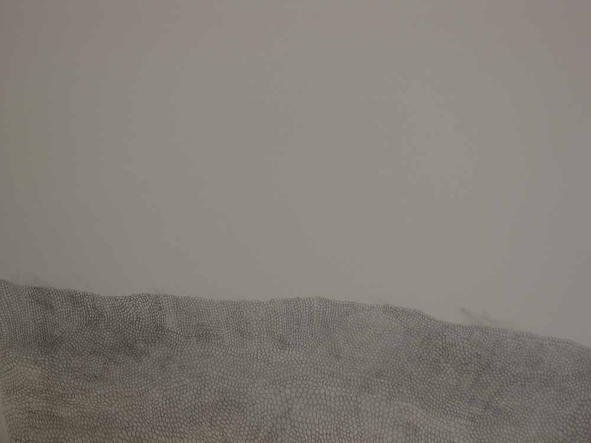
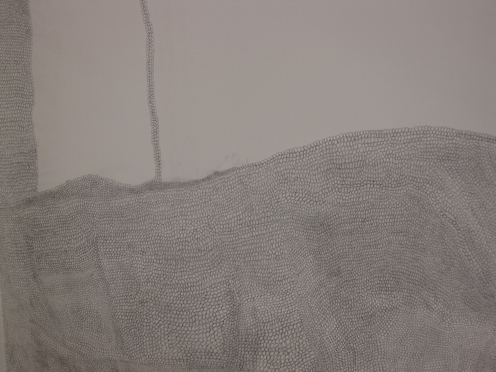
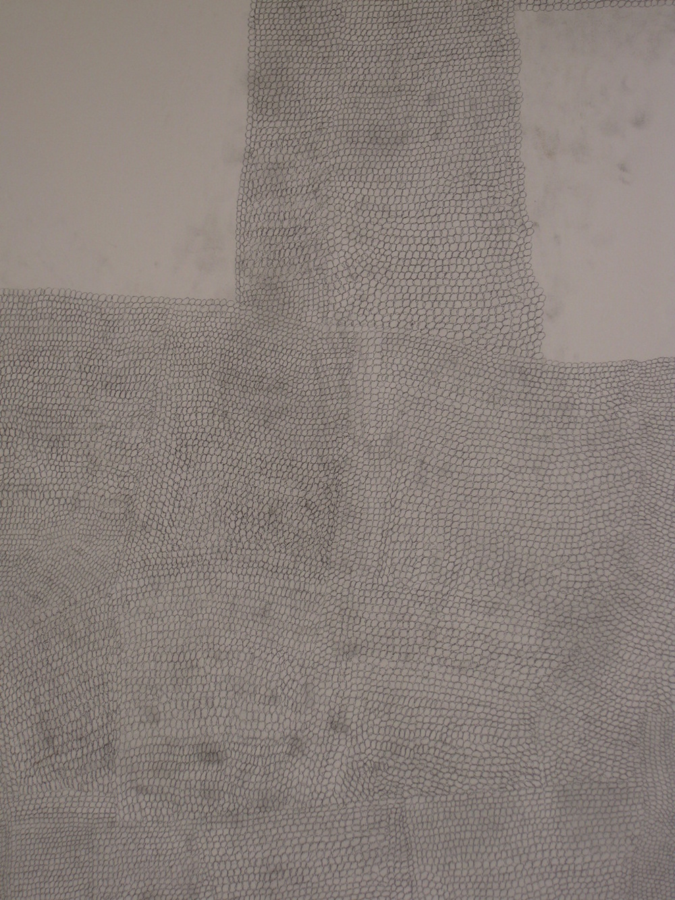

A few years ago, I was invited by Beyond Entropy to do a residency at the Museum Of Contemporary Art Calasetta in Sardinia. For the residency, I created a wall drawing where I covered a section of the wall in circles which countinued to repeat. I remember when I worked on this piece, I was drawn to the sound that was created by me drawing on the wall. After I completed the residency, Beyond Entropy, Tank Boys and I continued to collaborate and worked on a piece the following year named Calasetta Calling.
Calasetta Calling was a one evening performance that took place in Stationers Hall in London. For this piece I collaborated with Tank Boys to create circular stamps that were inspired by my wall drawing. On the evening of the performance I was stamping the paper repetitively and the sound of me stamping was amplified in the space.
The sound was intentionally echoed to highlight the memory I had of drawing directly on the wall in the museum of Contemporary Art Calasetta.The repetitive sound also reminded me of a persons heart beating. The title Calasetta Calling is also significant to the piece. When I was thinking about creating the performance, I wanted to create a work that more people I knew could see and at the same time create a experience that spoke of my memory of creating the wall drawing.
